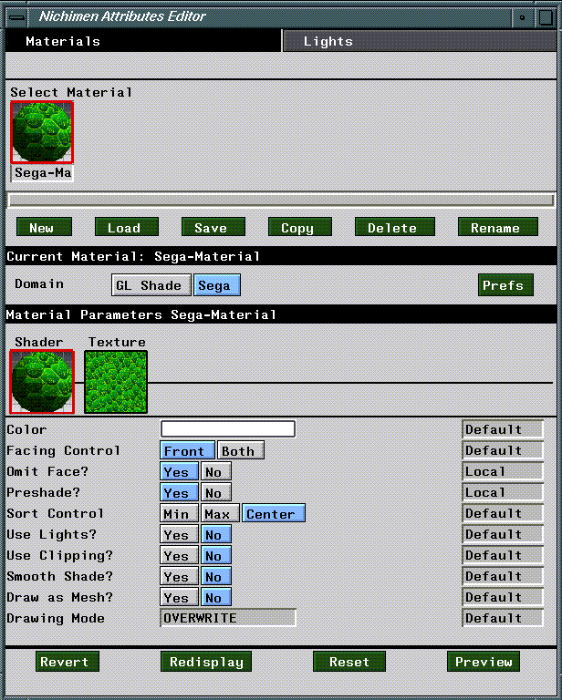
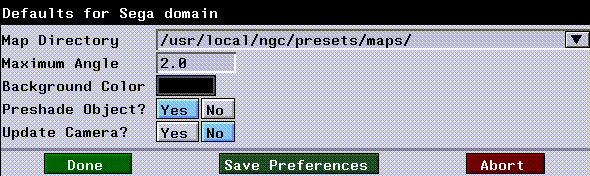
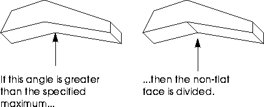
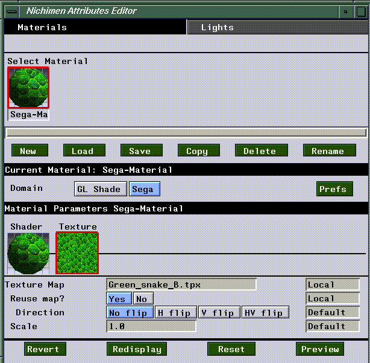

[N-World Contents] [Book Contents] [Prev] [Next] [Index]
Sega Materials and Attributes
This chapter outlines briefly the attributes and parameters associated with the Sega domain in the N·World Attributes Editor.
The Sega Domain
The Sega domain contains attributes and parameters specifically designed for attributing objects to be displayed on the Sega Saturn. You should use the Sega domain for materials you define in the Attributes Editor and which you intend to use on the Saturn. This section is designed to provide a brief overview of the domain as a whole, and its interface in the Attributes Editor. Refer to the Attributes Editor Reference Guide for more information about attributes and materials in general.
Materials and Inheritance
Materials are groups of attributes which determine the appearance of an object in a rendered scene. In N·World, materials are separate data structures, which you must associate with objects using the Nichimen Browser. This system provides for enhanced flexibility, since you can define a single material and apply it to many objects. In object based systems, you must redefine object attributes for each object in a scene.
Materials can be assigned to an entire object or to a selected face part of an object (a face part is a collection of faces from the object). Materials you want to use with the Sega Saturn must be defined in the Sega render domain. This domain has several properties and unique parameters, which you control with the Attributes Editor menus.
The method for creating materials is no different for the Sega domain than for any other domain. To learn how to create materials, as well as how to specify attribute inheritance from one material to another, see the Attributes Editor Reference Guide.
The Attributes Editor
You define materials using the Attributes Editor. To launch the Attributes Editor, (CLICK-L) on the Attributes button in the config bar.

Figure 3.1 Attributes Editor menu for the Sega domain.
Sega Domain Defaults
The following dialog appears when you (CLICK-L) on Prefs for the Sega Domain:

Figure 3.1 Sega domain defaults dialog.
Map Directory
The default directory from which maps are read.
Maximum Angle
The maximum angle a non-flat face can be "bent" before it is cut into two faces when sent to the Saturn.:

Figure 3.2 Cutting non-flat faces
Background Color
The color displayed behind the object during the test preview.
Preshade Object?
If set to Yes, the lights in the Default Light Group are used to preshade the object before it is sent to the Sega Saturn. See the Attributes Editor User's Guide for more information on setting up light groups.
Update Camera?
If set to Yes, the position of the camera on the Sega Saturn is updated to follow the position of the camera in the N-Geometry window.
- Note. You may experience gimbal lock on the display of the Sega Saturn if you rotate the camera and look at the object straight down along the Y axis. This is an unavoidable effect often encountered in 3D simulations.
Saving Your Defaults
To save your defaults, (Click-L) on the Save Preferences button at the bottom of the window.
Sega Domain Shader Parameters
The Sega domain is divided into two sections; Shader parameters and Texture parameters. Shader parameters control how objects are rendered, while texture parameters affect the display and appearance of texture maps. To see Shader parameters, (CLICK-L) on the box under the word Shader in the Attributes Editor. Figure 3.1 shows what the Attributes Editor looks like in shader mode for the Sega domain.
Color
Default: White
The color attribute is used for two purposes in the Sega render domain:
If you apply a map over an object or part that has a color other than white, the appearance of that map is altered. For example, if you apply a red brick texture onto a yellow cube, the bricks would take on a yellowish hue (how yellow would depend on the RGB value of the yellow assigned to the cube).
Facing Control
Default: Front
- Note. The Facing Control attribute is identical to the Plane attribute in SGL terminology (and in the Saturn documentation).
Omit Face?
Default: No
Default: Yes
Default: Min
The Sega maintains a z-order sort index which lets you specify which faces are to be displayed "on top". This is of significance if you have overlapping or intersecting faces.
Default: No
This attribute, along with the Preshade attribute, determines how faces are shaded on the Sega Saturn:
Use Clipping?
Default: No
Specifies whether or not to display vertices outside of a user-defined clipping area.
Default: No
The smooth shade parameter selects either "color by vertex" or "color by face."
Figure 3.3 Color by vertex vs. color by face
Draw as Mesh?
Default: No
- Note. While this attribute causes the face to appear transparent, it is actually more of a "venetian blind" effect; the transparency of the drawn portion of the faces is not affected by this setting.
Drawing Mode
Default: Overwrite
Determines which of the various drawing modes available on the Sega Saturn is used to draw the face:
Figure 3.4 Overwrite drawing mode
Figure 3.5 Shadow drawing mode
Figure 3.6 Semi-bright drawing mode
Figure 3.7 Semi-transparent drawing mode
Texture Map Parameters
Texture map parameters allow you to specify an image to use as a texture map, as well as control certain Sega specific aspects of the maps behavior. (CLICK-L) on the box under the word Texture to see Texture attributes in the Attributes Editor.

Figure 3.8 Sega domain texture attributes
Texture Map
Default: None
Specify the pathname for the texture map to be applied to the face, part, or body. The application of texture maps through mappers is described in more detail in the N-Render Reference Guide.
The size and number of texture maps which can be sent to the Sega Saturn are limited only by the texture map memory available.
Reuse Map?
Default: No - Only if a texture map is specified
If yes, then all faces share the same texture map. If you specify a texture map in the Texture Map field, then (Click-L) on Yes for Reuse Map, the direction field appears, with four choices.
- Note. The "flipping" is based on the face's orientation, not its relationship to the viewer.
Scale
Only if a Texture Map is specified.
Figure 3.9 Scaling texture map
Normally, the portion of the map that is applied to a face is determined by checking its uv values against those of the applied map:
u(max) - u(min) = value x width = pixels applied in u
v(max) - v(min) = value x height = pixels applied in v
.7 - .2 = .5 x 80 = 40 pixels applied in u
.9 - .2 = .7 x 40 = 28 pixels applied in v
Specifying a Scale value allows you to change the number of pixels applied to the specified face. If you wanted twice the information to be applied to the selected face, you could add a scale value of 2, which would affect the equation as follows:
.7 - .2 = .5 x 80 = 40 x 2 = 80 pixels applied in u
.9 - .2 = .7 x 40 = 28 x 2 = 56 pixels applied in v
- Note. The width of the resulting map must always be divisible by 8, and must be < 505.
The height must be <256.
Sega Domain Commands
The four button along the bottom of the Attributes Editor allow you perform various operations on your attributes, or send objects to the Saturn
Revert
(CLICK-L) on Reset to reset the attached Saturn.
Preview
(CLICK-L) on Preview to send all the objects in the current scene to the Sega Saturn.
[N-World Contents] [Book Contents] [Prev] [Next] [Index]
 Another fine product from Nichimen documentation!
Another fine product from Nichimen documentation!
Copyright © 1996, Nichimen Graphics Corporation. All rights
reserved.